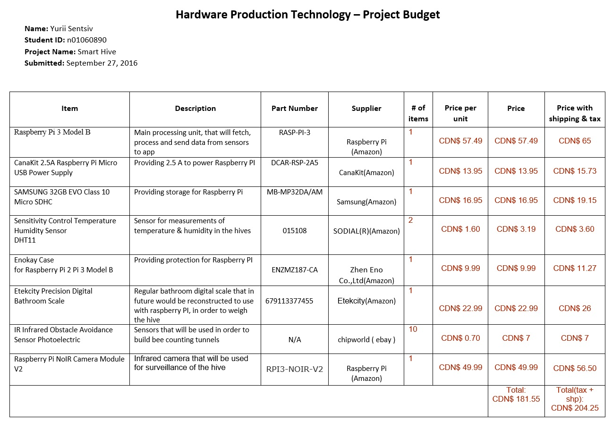
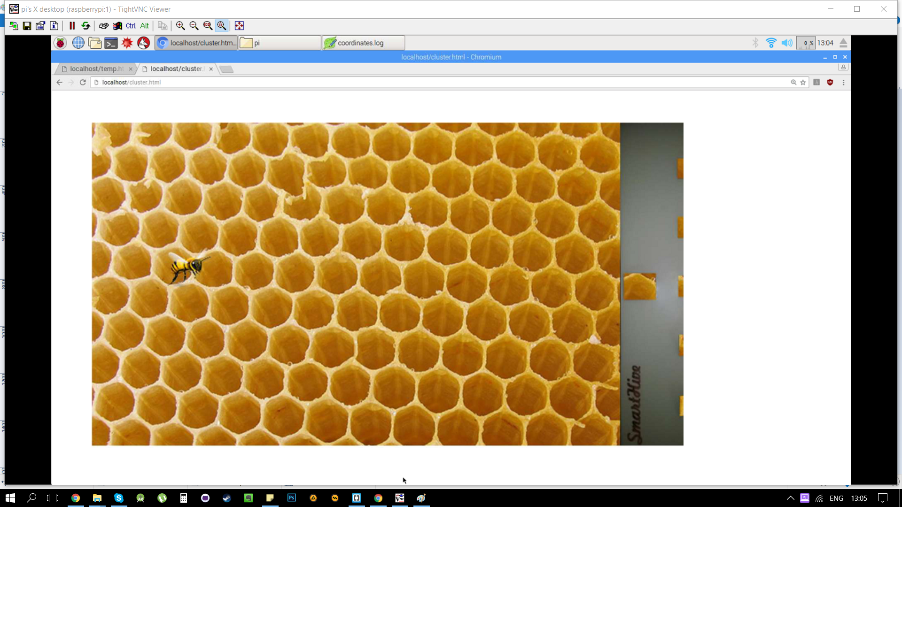

The project that I was working is the part of the automated hive monitoring system, called Smart Hive. My group, called “2bee || !2bee”, consisting of Paul Westman, Roberto Loja, and Yurii Sentsiv(myself) designed a prototype of Smart Hive, that would gather different information on hives, where our smart system would be installed. Specifically, I was working on temperature and humidity monitoring, as well as bee cluster detection. Here I would like to share my achievement, as well as my progress, so everyone could rebuild my project.
System Diagram
System Diagram
The concept of our project is to give an ability remotely track the status of the hives. It will be achieved to fetching the sensor readings from the hives, that would be attached to Raspberry Pi, process them, save in the database, and then deliver to customers in the user-friendly Android application representation.
Budget of the Project
As it was decided in my group, different parts of the project would be covered by different group member, as it will result it total group budget, decreasing total cost, as well as on time of research given to different parts of the Smart Hive project. I ended up using Raspberry PI, DHT11 temperature/humidity sensors, as well as resistors, jumper cables, electrical tape, soldering iron, Humber PCB Components Kit, and making laser cut dummy hive. Fortunately, most of the parts I obtained in kit, that I used in my previous courses, as well as laser cut hive, that to presented to me for free. Following is my budget:

Time Commitment
At the start of our semester we created schedule for better time management, and tried to follow all the milestones in time. If exclude all the progress reports, meetings and designing, here are the key point that need to be done, in order for anyone to replicate the project:
Milestone
Time required
Ordering parts
May vary where you order them, but if you get them in the Canada Robotix, you can get them in few hours.
Laser Cutting the acrylic hive
10 minutes
Printing PCB
1 day
Soldering and testing PCB
3 hours
Soldering the sensor to wires and resistor
30 minutes
Attaching the sensor on the hive
5 minutes
Attaching the sensors on the PI’s GPIOs
10 minutes
Raspberry Pi 3 Setup
2 hours
Loading the code and executing it
10 minutes
Unit testing
30 minutes
Setting up Apache server with the code
30 minutes
The whole process should take around 2-3 days, if the appropriate tools are accessible (PCB print, laser cutter, soldering station). For myself the whole process was split into 15 weeks, where every week I committed few hours, in order to be on track and be able to finish everything by the week 15. Attached is the original project schedule:
Create the casing for the dummy hive, in my case I was using Corel Draw. For our laser cutting machine, specific colours specified the inside cut red, outside cut green, engraving black. Attached is my casing that consist of 4 part, which I have glued afterwards.
In my case, because I bought DHT11 sensors without PCB board with resistors, that sensor needs, I simply soldered the resistors to the sensors between Power(Pin1) & Data(Pin2), so I didn’t need to use the breadboard, which was used in development purposes.
If it is possible, I recommend you to buy the one with the PCB.
Step 3:
In this next step, we will be connecting the sensors to the Raspberry Pi. In my case I was struggling to connect multiple sensors, as in the most example of code, this particular sensor was using GPIO4, which is also GPCLK0. All other GPIO pins would not work with this particular code in C, nor with Python equivalent:
Instead I found Adafruit library that handles the DHT11 on the regular GPIO pins, so consequently I used GPIO22 – GPIO25 for 4 sensors. https://github.com/adafruit/Adafruit_Python_DHT . Instruction on install are in the README of that Git project.
The following is the wiring that I used to connect my DHT11 to Raspberry PI’s GPIO 22-25 pins.
Mechanical Assembly Video
As I said previously, you don’t need to have a resistor, if you’ll get the sensor with the PCS. In my case had it soldered and isolated with the electrical tape.
PCB / Soldering
As was mentioned before I used the PCB that was provided by Humber College. The EAGLE software was used in order to draw it. We received freshly printed PCBs and had to solder all of the components on them. In my project, I used the LED mounted on top of the PCB in order to indicate when data from sensors is being read. Following are the schematics and board for PCB.
I also tried to print my custom PCB in order to recreate the PCB of the DHT11, but I had issues with soldering it, as the plates for the components were too tiny to be properly soldered. Following if the schematics and board for it.
Now, when all of the wiring are done, we can use the Python code in order to read the data. The following is the code that initializes the GPIO pins 22-25 and tries to read the data from them. In case of success, the avarage tempe and humidity will be captured. Next program reads the difference in sensor readings and calculates the coordinates, that will be displayed later on the web page. Th
In order to make the reading from the sensors be captured every minute I used crontab servise, that is embeded in UNIX system. Every minute I get the reading from two programs, and save the output into the txt files. Also, crontab will call the LED blinking program, to indicate readings.
This tutorial can be used toset up the apache server. When everything is up and running, and you can see the welcome sreen to apache, we can proced to next step.
In next step we will load 2 pages. Both of them are using local files with the data, the onces where the crontab saves it. You can make the symlink to the original files, and place them in the html folder, or just point to their actual location. Make sure you grant the permissions to work in the html folder with the 'chmod' command. My Temp/Hum graph uses the dygraph javascrip library, that is linked. Just place it in the html folder.
After you have all the files in the html folder, call your local IP address in the browser, with the extention of the name of the html files. If the instructions are followed, this should be result:

Unit Testing
For the unit testing I used my original program with reading temperature and humidity, but instead of displaying only the avarage result I display all the readings, then the following result should be expected:
If you don’t have the PCB with the LED, it’s ok, the program will still work. With Adafruit library we can use any GPIO pin. In case if any of the sensor isn’t operating properly, the program will take longer time to execute, as it will try to access the sensor few times. If thank was unsuccessful, then the message will appear, that will inform user that there a problem with particular sensor.
Production Testing
Now, if you were able to successfully retrieve the data from the sensors, and build your PCB, you can see that when ever the readings are being made through the Python program, the C program is being called, in order to indicate user that the readings were successful. After that, if the Apache server was installed and the html code was loaded, the result will be displayed on the temp/humidity diagram, and clusted location presentation.
Reproducibility Based on Instructions
At this point, after all of the explanations have been made, anyone with the access to appropriate tools should be able to reproduce it. Good luck, and contact me if you have any questions!